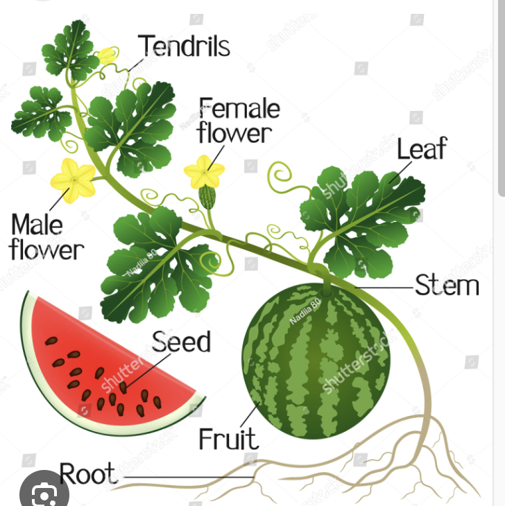

Watermelons are large, sweet fruit that have a green exterior and red interior. They are over 90% water, and originate from Africa.
They have a lot of vitamins, and are part of the cucumber family. Between the green rind and the red flesh there is a thin white rind, which has citrulline that is known for improving heart health. Although many believe that the exterior, the rind, isn't edible, the truth is that the entire watermelon can be eaten, and offers a lot of antioxidants.
Watermelons grow on long vines that have hairy leaves and tendrils.There are several different types of watermelons, and many ways to eat them.

Follow the Course